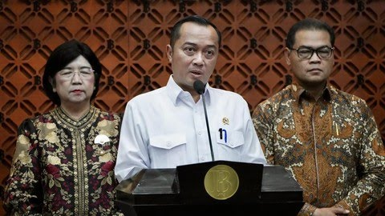

Jakarta, CNBC Indonesia-Presiden Prabowo Subianto telah mengirimkan surat kepada Dewan Perwakilan Rakyat (DPR) terkait calon Gubernur Bank Indonesia (BI).
Demikianlah disampaikan Menteri Sekretaris Negara Prasetyo Hadi kepada wartawan di Gedung Nusantara III, Kompleks Parlemen, Senayan, Jakarta, Senin (10/8/2026).
"Namanya tunggal satu nama bu Destry Damayanti," ungkapnya
Destry merupakan Pejabat Sementara Gubernur BI yang bertugas selepas Perry Warjiyo mengundurkan diri.
Surat Presiden tersebut juga mencantumkan calon Deputi Gubernur Senior Bank Indonesia (BI).
Berikut Vidionya :